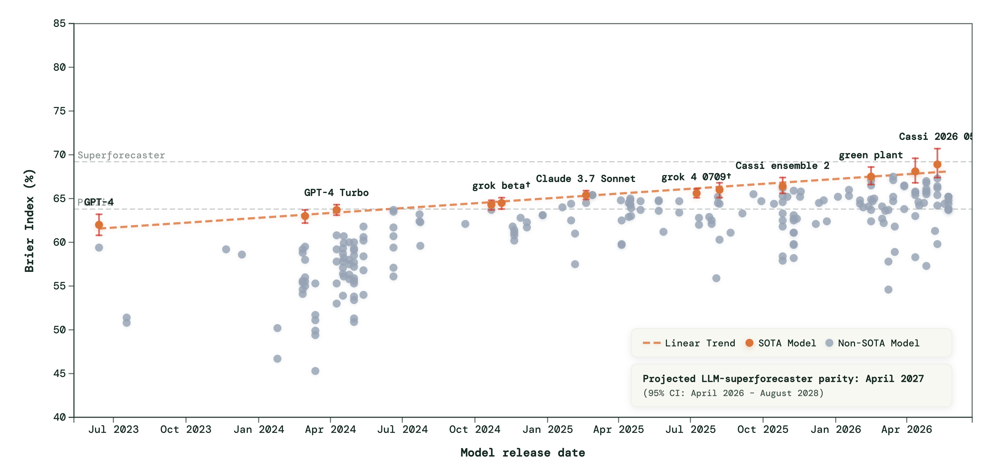
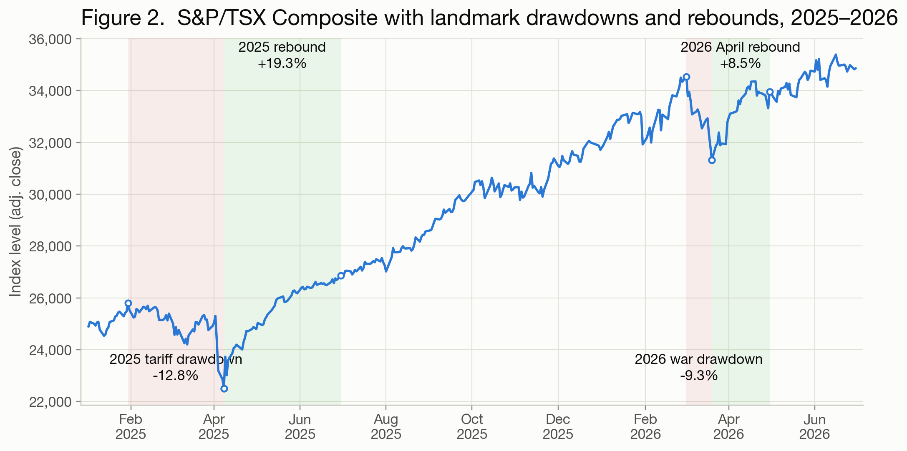
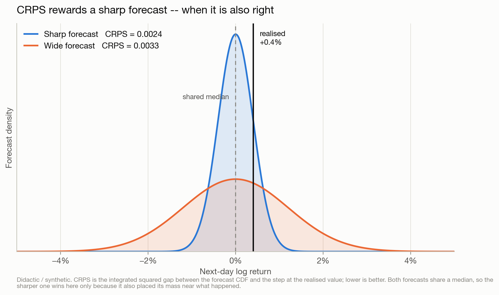
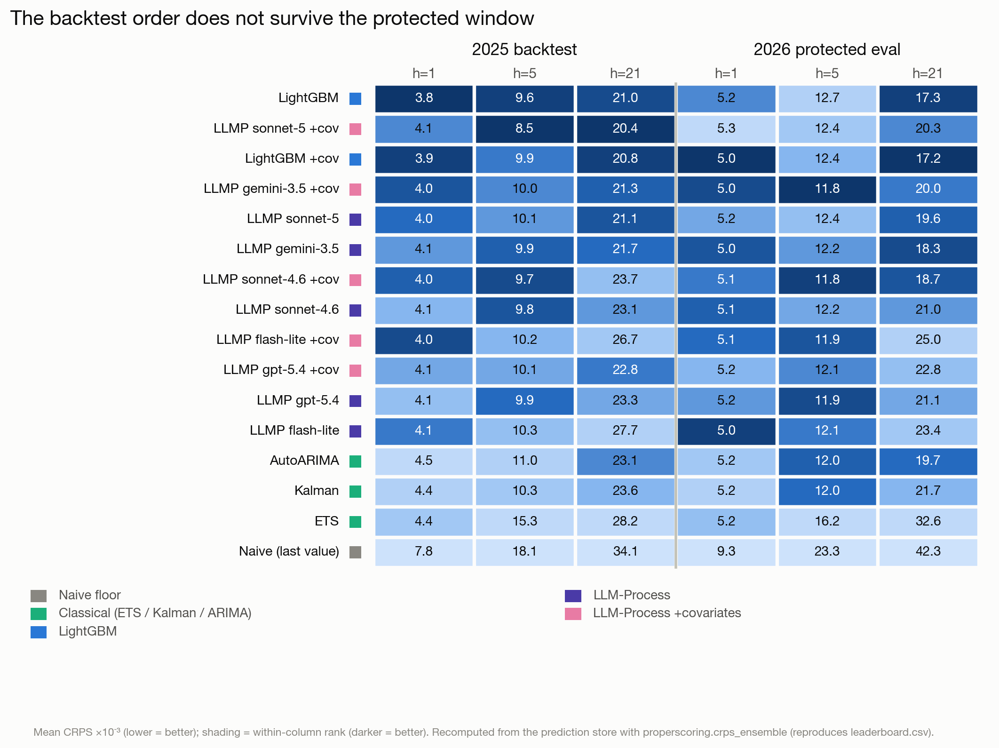
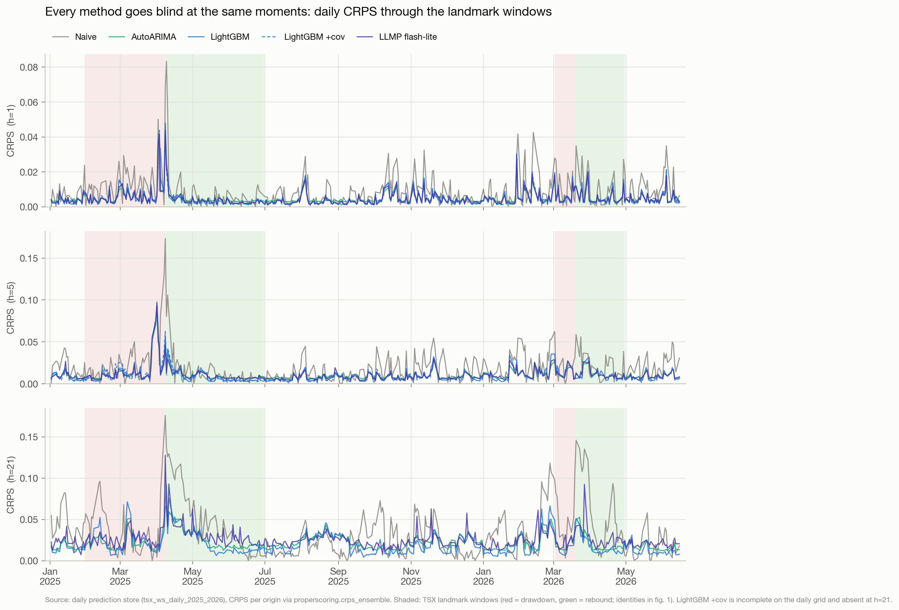
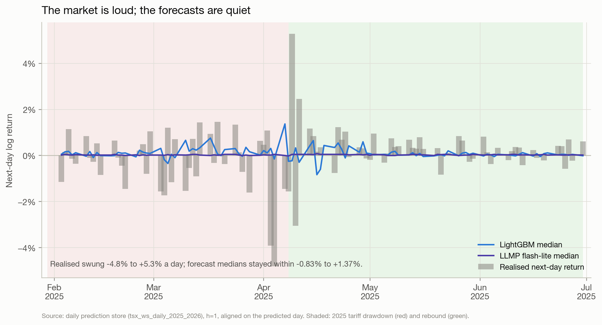

Can models forecast a series you actually care about?
ForecastBench keeps a public scoreboard of how well AI systems predict real future events. Over successive rounds, the best LLM forecasters have been climbing toward the line drawn by human superforecasters. If you build with these models, that trend raises a concrete question: does the skill transfer to a specific series you actually care about — a market index, a demand curve, a risk metric — where being roughly right on average isn’t enough and you need a full distribution?
Forecasting is the rare honest testbed for that question, because the future can’t be memorized. A model can regurgitate a benchmark it saw in training, but it cannot have seen next week’s close. Score a forecast against what actually happened and you get a number no amount of pretraining can fake.

✥ Click to enlargeThis two-part series accompanies Vector’s Agentic Forecasting bootcamp; the full code, data pipeline, and evaluation harness are open at github.com/VectorInstitute/agentic-forecasting. In Part 1 we build the scoreboard for one concrete series and run the numbers-only methods — from a naive baseline to gradient-boosted trees to a frozen LLM — up to their ceiling. Part 2 brings in agents that read.
The problem: a probabilistic forecast of the TSX
Our series is the S&P/TSX Composite, the main Canadian equity index. We forecast it because we’re in Toronto and it’s the market on our doorstep — but it is also a genuinely useful stress test. The TSX is heavy in energy and materials, so it reacts fast to the wider world: an oil move, a tariff announcement, a war-risk premium all show up in it quickly.
We forecast log returns, not price levels. Levels drift and trend, and a model can look impressive on levels just by predicting “about the same as yesterday.” Returns strip that away and force the forecaster to say something about what changes. We predict the cumulative log return at three horizons — 1, 5, and 21 business days: roughly tomorrow, next week, next month.
And we forecast probabilistically. A single-number point forecast of tomorrow’s return is almost useless: it will be wrong, and it tells you nothing about how wrong it might be. What a decision-maker needs is a distribution — where the center sits and how wide the uncertainty is. So every method here emits a full grid of quantiles, from which we read a median and a spread.

✥ Click to enlargeThe referee: one score for every method
Before any method makes a claim, we need a referee — one score that ranks a distribution against a single realized outcome, and ranks every method the same way.
That score is the Continuous Ranked Probability Score, or CRPS. Intuitively: a probabilistic forecast spreads probability mass across the number line; the outcome lands at one point, and CRPS measures how far the forecast’s mass sat, on average, from where reality landed. It rewards two things at once, and this is the subtle part — being sharp (a narrow, confident distribution) and being calibrated (that mass actually sitting where the outcome falls). A tight forecast in the wrong place is punished hard; a vague, hedge-everything forecast is punished gently but never wins. Lower is better, and conveniently, CRPS collapses to plain absolute error when the forecast is a single point — so probabilistic and point forecasts sit on one scale.

✥ Click to enlargeWith a referee in hand, the evaluation skeleton is one sentence, repeated for every method: define the task (log return at horizon h), fix an origin date and the information cutoff at that date, have the predictor emit its quantiles, wait for the outcome to resolve, and score it with CRPS. Same question, same cutoff, same score — every method on the same page.
The cutoff, honestly
We score each method not once but over many origins — a rolling-origin evaluation. Slide the origin date forward through history, re-forecast at each, and average the CRPS. That turns a single lucky or unlucky call into a distribution of skill.
We run two such sweeps. The first is a 2025 backtest: weekly origins across 2025, roughly 50 resolved forecasts per horizon. The second is a protected 2026 evaluation: weekly origins in the first half of 2026, around 24 per horizon, over data more recent than most of what these methods could have been built or tuned against.
The distinction matters most for the LLMs, and here we are deliberately skeptical. We do not trust stated training cutoffs. A model asked to forecast an “unknown” 2025 date may quietly know how that quarter turned out, so its backtest score is optimistic at best. The protected 2026 window is our honest read — recent enough that leakage is less likely, though never zero. So we report both sweeps side by side, and when a method’s backtest lead evaporates in the protected window, we say so.
The numbers-only ladder
Every method on this ladder sees only the series — and, for some, a panel of numeric covariates. None reads a word of news. They differ only in how much structure they assume.
The bottom rung is the naive floor: take the recent distribution of returns and carry it forward. It is the “your model isn’t magic” baseline, and it is no pushover — but everything worth keeping should beat it by a clear margin. At h=1 in the protected window it scores CRPS 0.0093, and the best method roughly halves that.
Next, the classical statistical methods — ETS, a Kalman-filter local model, and AutoARIMA. These are decades-refined, fully interpretable, and free to run: they fit a few parameters to the series’ own autocorrelation and emit a calibrated distribution. On the TSX they clear the naive floor comfortably and, at the short horizon, land within a hair of far heavier machinery.
Then LightGBM — gradient-boosted trees — with and without a covariate panel: a Canadian macro-financial set spanning the Bank of Canada policy rate, StatCan CPI and unemployment, WTI oil, gold, USD/CAD, the VIX, and the S&P 500. This is where the interesting result lives.

✥ Click to enlargeIn the 2025 backtest, plain LightGBM tops the h=1 column at CRPS 0.0038. In the protected 2026 window that lead does not survive: LightGBM-with-covariates takes h=1 at 0.00500, a frozen LLM (more on it below) is essentially tied at 0.00501 — indistinguishable — and plain LightGBM slips to the middle of the pack. This is exactly what the cutoff section warned about: a backtest ranking is a hypothesis, and the protected window is where it gets tested. At h=5 and h=21 the ordering reshuffles again — no single family owns every horizon — while the classical methods stay competitive at the short end and the covariate panel earns its keep unevenly, helping at some horizons and adding noise at others.
But the ranking is only half the story.

✥ Click to enlargeEvery method’s error spikes at the same moments — the 2025 tariff crash lifts all three horizons at once, the 2026 war window lifts them again — because the cause of each break is exogenous to the series. No amount of tree depth or covariate engineering sees a tariff coming from the price history alone.

✥ Click to enlargeA frozen LLM joins the ladder
Everything so far is a purpose-built forecasting method. What happens if we hand the same task to a general LLM — no fine-tuning, no forecasting head, just the raw model?
The technique is the LLM-Process (LLMP): serialize the return history — and, optionally, the same covariate panel — into a text prompt, and ask the model to emit the full quantile grid directly, as numbers. We then score those quantiles with CRPS exactly like every other method. No special pleading: same origins, same cutoff, same referee.
The result that matters is that this works at all. A frozen, general-purpose model, prompted with a column of numbers, emits a genuine predictive distribution — calibrated enough to compete. In the protected 2026 window at h=1, an LLMP forecast from a lightweight model (Gemini flash-lite) ties LightGBM-with-covariates at the top of the board — 0.00501 against 0.00500. Across the model matrix — several frontier and lightweight models, with and without covariates — the LLMP forecasts land throughout the leaderboard, sometimes leading a horizon, sometimes mid-pack, never obviously broken. At the longer backtest horizons a heavier reasoning model (Claude Sonnet-5, with thinking enabled) tops h=5 and h=21, though its per-forecast cost is an order of magnitude above a flash-lite call — a trade-off worth naming out loud.
What this establishes is real: an LLM can act as a probabilistic forecaster off the shelf. What it does not fix is the ceiling from Figure 4. The LLMP model, like the trees and the classical methods, sees only numbers. It emits a better-shaped distribution over the same blind spots — quiet exactly where the series is about to get loud.
The rung that has to read
Step back and the ladder tells one story. From the naive floor to gradient-boosted trees to a frozen frontier LLM, every rung improves the shape of the distribution — sharper here, better-calibrated there — and every rung shares the identical failure mode. Look again at Figure 4: the error spikes line up across all of them, at exactly the tariff and war windows, because the cause of each regime break was not in the price history at those origins. It was in the news. A tariff is announced in words before it is a number in a series; a war-risk premium is a headline before it is a return.
That is the ceiling of numbers-only forecasting, and no rearrangement of the same inputs breaks through it. The next rung has to read. In Part 2, we give the forecaster the news — and then face the harder problem of how you trust one that does.